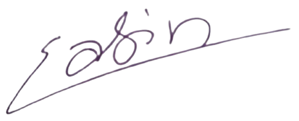

Software Developer | M.Sc. Web Engineering Candidate
Result-oriented Computer Science graduate with professional experience in backend and frontend web development. Proficient in Python/Django and React ecosystems, with a strong focus on building scalable RESTful APIs and responsive user interfaces. Following a successful academic career at Tribhuvan University, I have been admitted to the Master of Science in Web Engineering at TU Chemnitz, Germany. I am eager to leverage this international academic opportunity to specialize in distributed systems, web security, and advanced software architecture.
Advanced studies focusing on the engineering of complex web applications, including distributed systems, software service architectures, web security, and data management technologies.
Completed a comprehensive 4-year degree with a final score of 64.5%.
Focused on Mathematics, Physics, and Computer Science.
Dedicated bridge period focused on advanced software development and academic preparation:
I hereby declare that the information provided in this CV is true and accurate to the best of my knowledge.
